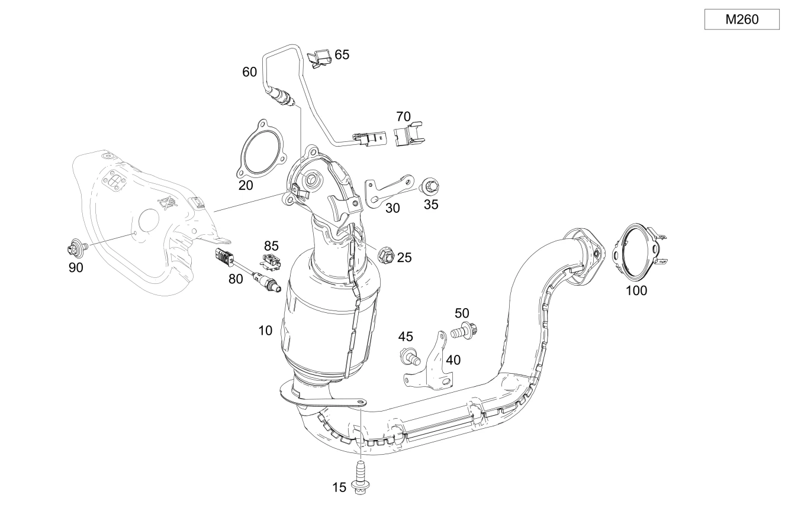

| № | Артикул | Название | Кол. | Примечание | Ограничение |
|---|---|---|---|---|---|
| 10 | A 247 490 48 00 | Трубопровод ОГ пер. | 1 | Передн. [697] ДЕТАЛЬ ПОСТАВЛЯЕТСЯ ТОЛЬКО/ИЛИ ТАКЖЕ КАК ЗАП.ЧАСТЬ | M260 |
| 10 | A 247 490 58 02 | Трубопровод ОГ пер. | 1 | Передн. [697] ДЕТАЛЬ ПОСТАВЛЯЕТСЯ ТОЛЬКО/ИЛИ ТАКЖЕ КАК ЗАП.ЧАСТЬ | M260+961 |
| 10 | A 247 490 94 00 | Трубопровод ОГ пер. | 1 | Передн. [697] ДЕТАЛЬ ПОСТАВЛЯЕТСЯ ТОЛЬКО/ИЛИ ТАКЖЕ КАК ЗАП.ЧАСТЬ | M260+(498/945) |
| 10 | A 247 490 72 00 | Трубопровод ОГ пер. | 1 | Передн. [697] ДЕТАЛЬ ПОСТАВЛЯЕТСЯ ТОЛЬКО/ИЛИ ТАКЖЕ КАК ЗАП.ЧАСТЬ | M260+M20+M016+(460/494) |
| 10 | A 247 490 71 00 | Трубопровод ОГ пер. | 1 | Передн. [697] ДЕТАЛЬ ПОСТАВЛЯЕТСЯ ТОЛЬКО/ИЛИ ТАКЖЕ КАК ЗАП.ЧАСТЬ | M260+(460/494/835) |
| 10 | A 247 490 58 02 | Трубопровод ОГ пер. | 1 | Передн. [697] ДЕТАЛЬ ПОСТАВЛЯЕТСЯ ТОЛЬКО/ИЛИ ТАКЖЕ КАК ЗАП.ЧАСТЬ | M260+(961/999) |
| 10 | A 247 490 59 02 | Трубопровод ОГ пер. | 1 | Передн. [697] ДЕТАЛЬ ПОСТАВЛЯЕТСЯ ТОЛЬКО/ИЛИ ТАКЖЕ КАК ЗАП.ЧАСТЬ | M260+AA7 |
| 10 | A 247 490 95 00 | Трубопровод ОГ пер. | 1 | Передн. [697] ДЕТАЛЬ ПОСТАВЛЯЕТСЯ ТОЛЬКО/ИЛИ ТАКЖЕ КАК ЗАП.ЧАСТЬ | M260+AA7+945 |
| 10 | A 247 490 59 02 | Трубопровод ОГ пер. | 1 | Передн. [697] ДЕТАЛЬ ПОСТАВЛЯЕТСЯ ТОЛЬКО/ИЛИ ТАКЖЕ КАК ЗАП.ЧАСТЬ | M260+AA7+498 |
| 10 | A 247 490 72 00 | Трубопровод ОГ пер. | 1 | Передн. [697] ДЕТАЛЬ ПОСТАВЛЯЕТСЯ ТОЛЬКО/ИЛИ ТАКЖЕ КАК ЗАП.ЧАСТЬ | M260+AA7+(460/494/835) |
| 10 | A 247 490 65 03 | Трубопровод ОГ пер. | 1 | Передн. [697] ДЕТАЛЬ ПОСТАВЛЯЕТСЯ ТОЛЬКО/ИЛИ ТАКЖЕ КАК ЗАП.ЧАСТЬ | M260+9U8+B01+3S1 |
| 10 | A 247 490 65 03 | Трубопровод ОГ пер. | 1 | Передн. [697] ДЕТАЛЬ ПОСТАВЛЯЕТСЯ ТОЛЬКО/ИЛИ ТАКЖЕ КАК ЗАП.ЧАСТЬ | M260+9U8+B01+3S1 |
| 10 | A 247 490 98 03 | Трубопровод ОГ пер. | 1 | Передн. [697] ДЕТАЛЬ ПОСТАВЛЯЕТСЯ ТОЛЬКО/ИЛИ ТАКЖЕ КАК ЗАП.ЧАСТЬ | M260+9U8+B01+4S1 |
| 10 | A 247 490 98 03 | Трубопровод ОГ пер. | 1 | Передн. [697] ДЕТАЛЬ ПОСТАВЛЯЕТСЯ ТОЛЬКО/ИЛИ ТАКЖЕ КАК ЗАП.ЧАСТЬ | M260+9U8+B01+4S1 |
| 10 | A 247 490 04 05 | Трубопровод ОГ пер. | 1 | Передн. [697] ДЕТАЛЬ ПОСТАВЛЯЕТСЯ ТОЛЬКО/ИЛИ ТАКЖЕ КАК ЗАП.ЧАСТЬ | M260+9U8+B01+3S6 |
| 15 | N 000000 000276 | Винт с 6-гр. глвк | 2 | Выпускная система к блоку цилиндров; M8X20 | M260 |
| 15 | N 000000 000276 | Винт с 6-гр. глвк | 1 | Выпускная система к блоку цилиндров; M8X20 | M260+9U8+B01 |
| 20 | A 271 142 07 80 | Многоканальное уплотнение | 1 | Между турбокомпрессором и выпускной трубой | M260 |
| 20 | A 260 142 23 00 | Полуметал. уплотнение | 1 | Между турбокомпрессором и выпускной трубой | M260 |
| 20 | A 256 142 03 80 | Полуметал. уплотнение | 1 | Между турбокомпрессором и выпускной трубой | M260+9U8+B01 |
| 22 | A 000 995 50 33 | Проф. хомут сист. вып. ОГ | 1 | Выпускная система к турбокомпрессору | M260+9U8+B01 |
| 25 | A 002 990 39 50 | Гайка с фланцем | 3 | Выпускная система к турбокомпрессору M8 | M260 |
| 30 | A 247 492 18 00 | Держатель | 1 | Крепление сверху | M260 |
| 30 | A 247 492 42 00 | Держатель | 1 | Крепление сверху | M260+9U8+B01 |
| 35 | A 000 990 67 03 | Винт Torx External | 2 | Держатель к трубопроводу ОГ; M8X20 | M260 |
| 35 | A 000 990 67 03 | Винт Torx External | 2 | Держатель к трубопроводу ОГ; M8X20 | M260/M260+9U8+B01 |
| 40 | A 247 492 19 00 | Держатель | 1 | Крепление снизу | M260 |
| 40 | A 247 492 19 00 | Держатель | 1 | Крепление снизу | M260/M260+9U8+B01 |
| 45 | A 094 990 46 00 | Винт Torx External | 1 | Держатель к трубопроводу ОГ; M8X15 | M260 |
| 45 | A 094 990 46 00 | Винт Torx External | 1 | Держатель к трубопроводу ОГ; M8X15 | M260/M260+9U8+B01 |
| 50 | N 000000 003853 | Винт с 6-гр. глвк | 2 | Держатель к масляному поддону; M8X16 | M260/M260+9U8+B01 |
| 60 | A 000 542 24 04 | Лямбда-зонд | 1 | перед каталитическим нейтрализатором ОГ | M260 |
| 60 | A 000 542 24 04 | Лямбда-зонд | 1 | перед каталитическим нейтрализатором ОГ | M260/M260+9U8+B01 |
| 60 | A 000 542 24 04 | Лямбда-зонд | 1 | перед каталитическим нейтрализатором ОГ | M260 |
| 60 | A 000 542 58 12 | Лямбда-зонд | 1 | перед каталитическим нейтрализатором ОГ | M260 |
| 60 | A 000 542 87 11 | Лямбда-зонд | 1 | перед каталитическим нейтрализатором ОГ | M260+9U8+B01 |
| 60 | A 000 542 87 11 | Лямбда-зонд | 1 | перед каталитическим нейтрализатором ОГ | M260+9U8+B01 |
| 60 | A 000 542 63 12 | Лямбда-зонд | 1 | перед каталитическим нейтрализатором ОГ | M260+9U8+B01 |
| 65 | A 000 541 01 40 | Держатель | 1 | Крепление провода лямбда\-зонда; 18 X 24 MM | M260+-(AA7/9U8+B01) |
| 65 | A 000 541 01 40 | Держатель | 2 | Крепление провода лямбда\-зонда; 18 X 24 MM | M260+(AA7/9U8+B01) |
| 65 | A 000 541 01 40 | Держатель | 2 | Крепление провода лямбда\-зонда; 18 X 24 MM | M260+AA7 |
| 65 | A 000 541 01 40 | Держатель | 1 | Крепление провода лямбда\-зонда; 18 X 24 MM | M260+(AA7+9U8+B01/9U8+B01) |
| 70 | A 004 991 37 70 | Крепежная скоба | 1 | Провод датчика кислорода на наддувочном воздуховоде | M260 |
| 70 | A 004 991 37 70 | Крепежная скоба | 1 | Провод датчика кислорода на наддувочном воздуховоде | M260/M260+9U8+B01 |
| 80 | A 000 542 81 04 | Лямбда-зонд | 1 | После катализатора | M260 |
| 80 | A 000 542 20 12 | Лямбда-зонд | 1 | После катализатора [429] ДЕТАЛЬ, СВЯЗАННАЯ С ПРОТИВОУГОННОЙ БЕЗОПАСНОСТЬЮ | M260+9U8+B01 |
| 80 | A 000 542 20 12 | Лямбда-зонд | 1 | После катализатора [429] ДЕТАЛЬ, СВЯЗАННАЯ С ПРОТИВОУГОННОЙ БЕЗОПАСНОСТЬЮ | M260+9U8+B01 |
| 80 | A 000 542 59 12 | Лямбда-зонд | 1 | После катализатора | M260+9U8+B01 |
| 85 | A 094 159 02 00 | Держатель | 1 | Провод лямбда\-зонда к блоку цилиндров | M260 |
| 85 | A 207 545 16 40 | Держатель | 1 | Крепление провода зонда | M260+9U8+B01 |
| 90 | A 002 990 26 03 | Винт с неспадающей шайбой | 3 | Крепление экрана турбонагнетателя | M260 |
| 90 | A 002 990 26 03 | Винт с неспадающей шайбой | 3 | Крепление экрана турбонагнетателя | M260/M260+9U8+B01 |
| 100 | A 177 492 04 00 | Многоканальное уплотнение | 1 | Трубопровод ОГ спереди к трубопроводу ОГ посередине | M260/M282 |
| 100 | A 177 492 04 00 | Многоканальное уплотнение | 1 | Трубопровод ОГ спереди к трубопроводу ОГ посередине | M260+9U8 |
| 110 | A 177 490 51 01 | Система выпуска ОГ | 1 | Посередине | (M260/M260+B01)+M016+(M005/916)+-9U8 |
| 110 | A 177 490 17 02 | Система выпуска ОГ | 1 | Посередине | M260+M016+(M005/916)+(598/961)+-9U8 |
| 110 | A 177 490 12 04 | Система выпуска ОГ | 1 | Посередине | (M260/M260+B01)+M016+(M005/916)+999+-9U8 |
| 110 | A 177 490 03 03 | Система выпуска ОГ | 1 | Посередине | M260+B01+916+(598/961)+-9U8 |
| 110 | A 177 490 39 04 | Система выпуска ОГ | 1 | Посередине | M260+9U8+(M005/916)+964 |
| 110 | A 177 490 84 04 | Система выпуска ОГ | 1 | Посередине [697] ДЕТАЛЬ ПОСТАВЛЯЕТСЯ ТОЛЬКО/ИЛИ ТАКЖЕ КАК ЗАП.ЧАСТЬ | M260+9U8+M016+(M005/916)+4S7 |
| 110 | A 177 490 51 01 | Система выпуска ОГ | 1 | Посередине | M260+9U8+M016+(M005/916)+4S6 |
| 115 | A 000 990 68 03 | Винт Torx External | 2 | Передняя часть выпускной системы к средней части выпускной системы; M8X25 | M260/M282/M654 |
| 120 | A 247 492 40 00 | Держатель | 1 | Выпускная труба (передняя) | (M260/M282/M654) |
| 125 | N 000000 003175 | Гайка | 2 | Держатель к интегральной балке; M8 | -ME08 |
| 125 | N 000000 008303 | Шестигранная гайка | 2 | Держатель к интегральной балке; M8 | -ME08 |
| 130 | A 000 905 94 11 | Датчик температуры | 1 | перед каталитическим нейтрализатором ОГ | M260+9U8 |
| 130 | A 000 905 94 14 | Датчик температуры | 1 | перед каталитическим нейтрализатором ОГ | M260+9U8 |
| 130 | A 000 905 76 09 | Датчик температуры | 1 | перед каталитическим нейтрализатором ОГ | M260+(598/925/959/961/999) |
| 130 | A 000 905 76 09 | Датчик температуры | 1 | перед каталитическим нейтрализатором ОГ | M260+(598/961/999) |
| 130 | A 000 905 76 09 | Датчик температуры | 1 | перед каталитическим нейтрализатором ОГ | M260+9U8+B01+(925/959/940) |
| 130 | A 000 905 76 09 | Датчик температуры | 1 | перед каталитическим нейтрализатором ОГ | M260+9U8+B01+(961/964/999) |
| 130 | A 000 905 97 11 | Датчик температуры | 1 | перед каталитическим нейтрализатором ОГ | M260+9U8+B01+(961/964/999/4S7) |
| 130 | A 000 905 97 11 | Датчик температуры | 1 | перед каталитическим нейтрализатором ОГ | M260+9U8+(999/4S7) |
| 130 | A 000 905 97 11 | Датчик температуры | 1 | перед каталитическим нейтрализатором ОГ | M260+9U8+4S7 |
| 130 | A 000 905 97 11 | Датчик температуры | 1 | перед каталитическим нейтрализатором ОГ | M260+(598/961/999) |
| 132 | A 000 541 01 40 | Держатель | 1 | Крепление провода датчика температуры; 18 X 24 MM | (M260/M282)+(598/961) |
| 132 | A 000 541 01 40 | Держатель | 1 | Крепление провода датчика температуры; 18 X 24 MM | (M260/M282)+(598/961/999) |
| 132 | A 000 541 01 40 | Держатель | 1 | Крепление провода датчика температуры; 18 X 24 MM | M260+(598/925/961/999) |
| 132 | A 000 541 01 40 | Держатель | 1 | Крепление провода датчика температуры; 18 X 24 MM | M260+(598/961/964/999) |
| 132 | A 000 541 04 00 | Держатель | 1 | Крепление провода датчика температуры | M260+(598/961/999)+(802/803/804) |
| 132 | A 000 541 04 00 | Держатель | 1 | Крепление провода датчика температуры | (M260/M282)+(598/961/999/4S7) |
| 132 | A 000 541 04 00 | Держатель | 1 | Крепление провода датчика температуры | (M260/M282)+(598/961/999)/M260+9U8+4S7 |
| 132 | A 000 541 04 00 | Держатель | 1 | Крепление провода датчика температуры | M260+9U8+4S7 |
| 132 | A 000 541 01 40 | Держатель | 1 | Провод датчика температуры; 18 X 24 MM | M260+(598/961) |
| 132 | A 000 541 01 40 | Держатель | 1 | Провод датчика температуры; 18 X 24 MM | M260+(598/961/999) |
| 132 | A 000 541 01 40 | Держатель | 1 | Провод датчика температуры; 18 X 24 MM | M260+(598/925/961/999) |
| 132 | A 000 541 01 40 | Держатель | 1 | Провод датчика температуры; 18 X 24 MM | M260+(598/961/964/999) |
| 135 | A 177 159 21 00 | Держатель | 1 | Крепление датчика температуры | (M260/M282)+(598/961) |
| 135 | A 177 159 21 00 | Держатель | 1 | Крепление датчика температуры | M260+(598/961/999) |
| 135 | A 177 159 21 00 | Держатель | 1 | Крепление датчика температуры | M260+(598/925/961/999) |
| 135 | A 177 159 21 00 | Держатель | 1 | Крепление датчика температуры | M260+(598/961/964/999) |
| 135 | A 177 159 21 00 | Держатель | 1 | Крепление датчика температуры | M260+(598/961/999)/M260+9U8+4S7 |
| 135 | A 177 159 21 00 | Держатель | 1 | Крепление датчика температуры | M260+9U8+4S7 |
| 140 | A 247 492 24 00 | Держатель | 1 | Датчик оксидов азота | M608/(M260/M282)+(598/961)/M654+971 |
| 140 | A 247 492 24 00 | Держатель | 1 | Датчик оксидов азота | M608/(M260/M282)+(598/961/999/964)/M654+971 |
| 140 | A 247 492 47 00 | Держатель | 1 | Датчик оксидов азота | M608/(M260/M282)+(598/961/999/964)/M654+971 |
| 140 | A 247 492 47 00 | Держатель | 1 | Датчик оксидов азота | (M260/M282)+(598/961/999/964)/M654+971 |
| 140 | A 247 492 47 00 | Держатель | 1 | Датчик оксидов азота | (M260/M282)+(598/961/999)/M260+9U8+4S7/M654+971 |
| 140 | A 247 492 47 00 | Держатель | 1 | Датчик оксидов азота | M260+9U8+4S7/M654+971 |
| 140 | A 247 492 47 00 | Держатель | 1 | Датчик оксидов азота | M260+9U8+B01+(961/964/999/4S7) |
| 142 | A 202 990 03 17 | Винт с шестигр. головкой | 2 | Датчик NOx к кронштейну; M6X19 | M608/(M260/M282)+(598/961)/M654+971 |
| 142 | A 202 990 03 17 | Винт с шестигр. головкой | 2 | Датчик NOx к кронштейну; M6X19 | M260+(598/961/964/999) |
| 142 | A 202 990 03 17 | Винт с шестигр. головкой | 2 | Датчик NOx к кронштейну; M6X19 | M260+(598/961/999)/M260+9U8+4S7 |
| 142 | A 202 990 03 17 | Винт с шестигр. головкой | 2 | Датчик NOx к кронштейну; M6X19 | M260+9U8+4S7 |
| 142 | A 202 990 03 17 | Винт с шестигр. головкой | 2 | Датчик NOx к кронштейну; M6X19 | M260+9U8+B01+(961/964/999/4S7) |
| 142 | A 202 990 03 17 | Винт с шестигр. головкой | 2 | Держатель к интегральной балке; M6X19 | M608/(M260/M282)+(598/961)/M654+971 |
| 142 | A 202 990 03 17 | Винт с шестигр. головкой | 2 | Держатель к интегральной балке; M6X19 | M608/(M260/M282)+(598/961/999/964)/M654+971 |
| 142 | A 202 990 03 17 | Винт с шестигр. головкой | 2 | Держатель к интегральной балке; M6X19 | (M260/M282)+(598/961/999/964)/M654+971 |
| 142 | A 202 990 03 17 | Винт с шестигр. головкой | 2 | Держатель к интегральной балке; M6X19 | (M260/M282)+(598/961/999)/M260+9U8+4S7/M654+971 |
| 142 | A 202 990 03 17 | Винт с шестигр. головкой | 2 | Держатель к интегральной балке; M6X19 | M260+9U8+4S7/M654+971 |
| 142 | A 202 990 03 17 | Винт с шестигр. головкой | 2 | Держатель к интегральной балке; M6X19 | M260+9U8+B01+(961/964/999/4S7) |
| 145 | A 247 490 04 02 | Держатель | 1 | Крепление держателя | (M260/M282)+(598/961) |
| 145 | A 247 490 04 02 | Держатель | 1 | Крепление держателя | (M260/M282)+(598/961/964/999) |
| 145 | A 247 490 04 02 | Держатель | 1 | Крепление держателя | (M260/M282)+(598/961/999/4S7) |
| 145 | A 247 490 04 02 | Держатель | 1 | Крепление держателя | (M260/M282)+4S7 |
| 145 | A 247 490 04 02 | Держатель | 1 | Крепление держателя | (M260/M282)+(598/961)+830 |
| 145 | A 247 490 04 02 | Держатель | 1 | Крепление держателя | (M260/M282)+(598/961/964/999)+830 |
| 145 | A 247 490 04 02 | Держатель | 1 | Крепление держателя | (M260/M282)+(598/961/999/4S7)+830 |
| 145 | A 247 490 04 02 | Держатель | 1 | Крепление держателя | (M260/M282)+4S7+830 |
| 150 | N 000000 003477 | Гайка | 1 | Держатель к остову кузова; M6 | (M260/M282)+(598/961) |
| 150 | N 000000 003477 | Гайка | 1 | Держатель к остову кузова; M6 | (M260/M282)+(598/961/964/999) |
| 150 | N 000000 003477 | Гайка | 1 | Держатель к остову кузова; M6 | (M260/M282)+(598/961/999/4S7) |
| 150 | N 000000 003477 | Гайка | 1 | Держатель к остову кузова; M6 | (M260/M282)+4S7 |
| 150 | N 000000 003477 | Гайка | 3 | Держатель к остову кузова; M6 | (M260/M282)+(598/961/999/4S7)+830 |
| 150 | N 000000 003477 | Гайка | 3 | Держатель к остову кузова; M6 | (M260/M282)+4S7+830 |
| 155 | A 177 490 25 02 | Держатель | 1 | Дифференциальный датчик давления | (M260/M282)+(598/961) |
| 155 | A 177 490 25 02 | Держатель | 1 | Дифференциальный датчик давления | (M260/M282)+(598/961/964/999) |
| 155 | A 177 490 25 02 | Держатель | 1 | Дифференциальный датчик давления | (M260/M282)+(598/961/999/4S7) |
| 155 | A 177 490 25 02 | Держатель | 1 | Дифференциальный датчик давления | (M260/M282)+4S7 |
| 155 | A 177 490 25 02 | Держатель | 1 | Дифференциальный датчик давления | (M260/M282)+(598/961)+830 |
| 155 | A 177 490 25 02 | Держатель | 1 | Дифференциальный датчик давления | (M260/M282)+(598/961/964/999)+830 |
| 155 | A 177 490 25 02 | Держатель | 1 | Дифференциальный датчик давления | (M260/M282)+(598/961/999/4S7)+830 |
| 155 | A 177 490 25 02 | Держатель | 1 | Дифференциальный датчик давления | (M260/M282)+4S7+830 |
| 160 | A 247 490 05 02 | Держатель | 1 | Напорные трубопроводы к кронштейну | (M260/M282)+(598/961/964/999/4S7) |
| 160 | A 247 490 05 02 | Держатель | 1 | Напорные трубопроводы к кронштейну | (M260/M282)+4S7 |
| 160 | A 247 490 05 02 | Держатель | 1 | Напорные трубопроводы к кронштейну | (M260/M282)+(598/961/964/999/4S7)+830 |
| 160 | A 247 490 05 02 | Держатель | 1 | Напорные трубопроводы к кронштейну | (M260/M282)+4S7+830 |
| 165 | A 000 905 78 09 | Датчик давления | 1 | (M260/M282)+(598/961) | |
| 165 | A 000 905 78 09 | Датчик давления | 1 | M260+(598/961) | |
| 165 | A 000 905 49 11 | Датчик давления | 1 | M260+9U8+(598/961/964/999) | |
| 165 | A 000 905 49 11 | Датчик давления | 1 | M260+9U8+(961/964/999/4S7) | |
| 165 | A 000 905 49 11 | Датчик давления | 1 | M260+9U8+(999/4S7) | |
| 165 | A 000 905 49 11 | Датчик давления | 1 | M260+9U8+4S7 | |
| 165 | A 000 905 53 07 | Датчик давления | 1 | M260+999 | |
| 170 | N 000000 003477 | Гайка | 3 | Крепление кронштейна и датчика; M6 | (M260/M282)+(598/961) |
| 170 | N 910143 006004 | Винт с 6-гр. глвк | 1 | Крепление датчика давления; M6X30 | M260+9U8+(598/961/964/999) |
| 170 | N 910143 006004 | Винт с 6-гр. глвк | 1 | Крепление датчика давления; M6X30 | M260+9U8+(961/964/999/4S7) |
| 170 | N 910143 006004 | Винт с 6-гр. глвк | 1 | Крепление датчика давления; M6X30 | M260+9U8+4S7 |
| 170 | N 000000 003477 | Гайка | 3 | Крепление кронштейна и датчика; M6 | (M260/M282)+(598/961/964/999) |
| 170 | N 000000 003477 | Гайка | 3 | Крепление кронштейна и датчика; M6 | (M260/M282)+(598/961/999/4S7) |
| 170 | N 000000 003477 | Гайка | 3 | Крепление кронштейна и датчика; M6 | (M260/M282)+4S7 |
| 170 | N 000000 003477 | Гайка | 3 | Крепление кронштейна и датчика; M6 | (M260/M282)+(598/961/999/4S7)+830 |
| 170 | N 000000 003477 | Гайка | 3 | Крепление кронштейна и датчика; M6 | (M260/M282)+4S7+830 |
| 175 | A 140 995 04 05 | Пружинный хомут | 2 | Шланги системы выпуска ОГ к датчику давления; 14/12 MM | (M260/M282)+(598/961) |
| 175 | A 140 995 04 05 | Пружинный хомут | 2 | Шланги системы выпуска ОГ к датчику давления; 14/12 MM | (M260/M282)+(598/961/964/999) |
| 175 | A 140 995 04 05 | Пружинный хомут | 2 | Шланги системы выпуска ОГ к датчику давления; 14/12 MM | (M260/M282)+(598/961/999/4S7) |
| 175 | A 004 997 20 90 | Хомут для шланга | 2 | Шланги системы выпуска ОГ к датчику давления; 14.5\-15.5 MM | (M260/M282)+(598/961) |
| 175 | A 004 997 20 90 | Хомут для шланга | 2 | Шланги системы выпуска ОГ к датчику давления; 14.5\-15.5 MM | (M260/M282)+(598/961/964/999) |
| 175 | A 004 997 20 90 | Хомут для шланга | 2 | Шланги системы выпуска ОГ к датчику давления; 14.5\-15.5 MM | (M260/M282)+(598/961/999/4S7) |
| 175 | A 140 995 04 05 | Пружинный хомут | 2 | Шланги системы выпуска ОГ к датчику давления; 14/12 MM | (M260/M282)+(598/961/964/999) |
| 175 | A 140 995 04 05 | Пружинный хомут | 2 | Шланги системы выпуска ОГ к датчику давления; 14/12 MM | (M260/M282)+(598/961/999/4S7) |
| 175 | A 140 995 04 05 | Пружинный хомут | 2 | Шланги системы выпуска ОГ к датчику давления; 14/12 MM | (M260/M282)+4S7 |
| 175 | A 004 997 20 90 | Хомут для шланга | 2 | Шланги системы выпуска ОГ к датчику давления; 14.5\-15.5 MM | (M260/M282)+(598/961)+830 |
| 175 | A 004 997 20 90 | Хомут для шланга | 2 | Шланги системы выпуска ОГ к датчику давления; 14.5\-15.5 MM | (M260/M282)+(598/961/964/999)+830 |
| 175 | A 140 995 04 05 | Пружинный хомут | 2 | Шланги системы выпуска ОГ к датчику давления; 14/12 MM | (M260/M282)+(598/961/964/999)+830 |
| 175 | A 140 995 04 05 | Пружинный хомут | 2 | Шланги системы выпуска ОГ к датчику давления; 14/12 MM | (M260/M282)+(598/961/999/4S7)+830 |
| 175 | A 140 995 04 05 | Пружинный хомут | 2 | Шланги системы выпуска ОГ к датчику давления; 14/12 MM | (M260/M282)+4S7+830 |
| 175 | A 140 995 04 05 | Пружинный хомут | 2 | Шланги системы выпуска ОГ к датчику давления; 14/12 MM | (M260/M282)+(598/961/999/4S7)+830 |
| 175 | A 004 997 20 90 | Хомут для шланга | 2 | Шланги системы выпуска ОГ к датчику давления; 14.5\-15.5 MM | (M260/M282)+(598/961/999/4S7)+830 |
| 180 | A 247 492 26 00 | Шланг выпускной системы | 1 | перед каталитическим нейтрализатором ОГ | (M260/M282)+(598/961) |
| 180 | A 247 492 26 00 | Шланг выпускной системы | 1 | перед каталитическим нейтрализатором ОГ | (M260/M282)+(598/961/964/999) |
| 180 | A 247 492 26 00 | Шланг выпускной системы | 1 | перед каталитическим нейтрализатором ОГ | (M260/M282)+(598/961)+830 |
| 180 | A 247 492 26 00 | Шланг выпускной системы | 1 | перед каталитическим нейтрализатором ОГ | (M260/M282)+(598/961/964/999)+830 |
| 180 | A 247 492 44 00 | Шланг выпускной системы | 1 | перед каталитическим нейтрализатором ОГ | (M260/M282)+(598/961/999)+(801+051/802/803) |
| 180 | A 247 492 44 00 | Шланг выпускной системы | 1 | перед каталитическим нейтрализатором ОГ | (M260/M282)+(598/961/999) |
| 180 | A 247 492 44 00 | Шланг выпускной системы | 1 | перед каталитическим нейтрализатором ОГ | (M260/M282)+(598/961/999/4S7) |
| 180 | A 247 492 44 00 | Шланг выпускной системы | 1 | перед каталитическим нейтрализатором ОГ | (M260/M282)+4S7 |
| 180 | A 247 492 44 00 | Шланг выпускной системы | 1 | перед каталитическим нейтрализатором ОГ | (M260/M282)+(598/961/999)+(801+051/802/803)+830 |
| 180 | A 247 492 44 00 | Шланг выпускной системы | 1 | перед каталитическим нейтрализатором ОГ | (M260/M282)+(598/961/999)+830 |
| 180 | A 247 492 44 00 | Шланг выпускной системы | 1 | перед каталитическим нейтрализатором ОГ | (M260/M282)+(598/961/999/4S7)+830 |
| 180 | A 247 492 44 00 | Шланг выпускной системы | 1 | перед каталитическим нейтрализатором ОГ | (M260/M282)+4S7+830 |
| 180 | A 247 492 44 00 | Шланг выпускной системы | 1 | перед каталитическим нейтрализатором ОГ | M260+9U8+4S7 |
| 185 | A 140 995 04 05 | Пружинный хомут | 2 | Крепление шлангов выпускной системы; 14/12 MM | (M260/M282)+(598/961) |
| 185 | A 140 995 04 05 | Пружинный хомут | 2 | Крепление шлангов выпускной системы; 14/12 MM | (M260/M282)+(598/961/964/999) |
| 185 | A 140 995 04 05 | Пружинный хомут | 2 | Крепление шлангов выпускной системы; 14/12 MM | (M260/M282)+(598/961/999/4S7) |
| 185 | A 140 995 04 05 | Пружинный хомут | 2 | Крепление шлангов выпускной системы; 14/12 MM | (M260/M282)+4S7 |
| 185 | A 140 995 04 05 | Пружинный хомут | 2 | Крепление шлангов выпускной системы; 14/12 MM | (M260/M282)+(598/961)+830 |
| 185 | A 140 995 04 05 | Пружинный хомут | 2 | Крепление шлангов выпускной системы; 14/12 MM | (M260/M282)+(598/961/964/999)+830 |
| 185 | A 140 995 04 05 | Пружинный хомут | 2 | Крепление шлангов выпускной системы; 14/12 MM | (M260/M282)+(598/961/999/4S7)+830 |
| 185 | A 140 995 04 05 | Пружинный хомут | 2 | Крепление шлангов выпускной системы; 14/12 MM | (M260/M282)+4S7+830 |
| 187 | A 177 491 39 00 | Напорный трубопровод | 1 | Перед сажевым фильтром | (M260/M282)+(598/961/999/4S7) |
| 187 | A 177 491 39 00 | Напорный трубопровод | 1 | Перед сажевым фильтром | (M260/M282)+9U8+4S7 |
| 189 | A 177 491 40 00 | Напорный трубопровод | 1 | После сажевого фильтра | (M260/M282)+(598/961/999/4S7) |
| 189 | A 177 491 77 00 | Напорный трубопровод | 1 | После сажевого фильтра | (M260/M282)+9U8+4S7 |
| 190 | A 177 490 50 02 | Держатель | 1 | Крепление напорного трубопровода | (M260/M282)+(598/961/999/4S7) |
| 190 | A 177 490 50 02 | Держатель | 1 | Крепление напорного трубопровода | (M260/M282)+9U8+4S7 |
| 192 | N 910143 006001 | Винт с 6-гр. глвк | 1 | Крепление напорного трубопровода; M6X16 | (M260/M282)+(598/961/999/4S7) |
| 192 | N 910143 006001 | Винт с 6-гр. глвк | 1 | Крепление напорного трубопровода; M6X16 | (M260/M282)+9U8+4S7 |
| 200 | A 247 492 43 00 | Шланг выпускной системы | 1 | После катализатора | (M260/M282)+(598/961/999)+(801+051/802/803) |
| 200 | A 247 492 43 00 | Шланг выпускной системы | 1 | После катализатора | (M260/M282)+(598/961/999) |
| 200 | A 247 492 43 00 | Шланг выпускной системы | 1 | После катализатора | (M260/M282)+(598/961/999/4S7) |
| 200 | A 247 492 43 00 | Шланг выпускной системы | 1 | После катализатора | (M260/M282)+4S7 |
| 200 | A 247 492 43 00 | Шланг выпускной системы | 1 | После катализатора | (M260/M282)+(598/961/999)+(801+051/802/803)+830 |
| 200 | A 247 492 43 00 | Шланг выпускной системы | 1 | После катализатора | (M260/M282)+(598/961/999)+830 |
| 200 | A 247 492 43 00 | Шланг выпускной системы | 1 | После катализатора | (M260/M282)+(598/961/999/4S7)+830 |
| 200 | A 247 492 43 00 | Шланг выпускной системы | 1 | После катализатора | (M260/M282)+4S7+830 |
| 200 | A 247 492 43 00 | Шланг выпускной системы | 1 | После катализатора | M260+9U8+4S7 |
| 210 | A 177 616 30 00 | Распорка | 1 | Крепление средней части выпускной системы | M260+M016+(M005/916) |
| 225 | A 177 492 12 00 | Держатель | 1 | Крепление средней части выпускной системы | M260+M016+(M005/916) |
| 227 | A 177 616 30 00 | - Распорка | 1 | К держателю | M260+M016 |
| 230 | N 910143 010011 | Винт с 6-гр. глвк | 2 | Держатель к остову кузова; M10X20\-10.9 | |
| 240 | A 000 995 48 02 | Трубный хомут | 1 | Выпускная труба спереди к выпускной трубе сзади; Ø 70 MM | M260+M016 |
| 250 | A 118 490 28 00 | Система выпуска ОГ | 1 | Сзади | (M260/M260+B01)+M016+(M005/916) |
| 250 | A 118 490 28 00 | Система выпуска ОГ | 1 | Сзади | M260+M016+(M005/916) |
| 250 | A 118 490 29 00 | Система выпуска ОГ | 1 | Сзади | (M260/M260+B01)+M016+(M005/916)+(598/961/999) |
| 250 | A 177 490 18 04 | Система выпуска ОГ | 1 | Сзади | -U55+M260+M005/-U55+M260+916/-U55+M260+M005+598/-U55+M260+M005+961/-U55+M260+M005+999/-U55+M260+916+598/-U55+M260+916+961/-U55+M260+916+999 |
| 250 | A 177 490 99 04 | Система выпуска ОГ | 1 | Сзади | M260+(598/961)+(M005/916)+1S6 |
| 250 | A 177 490 99 04 | Система выпуска ОГ | 1 | Сзади | M260+(M005/916)+1S6 |
| 250 | A 177 490 99 04 | Система выпуска ОГ | 1 | Сзади | (M260/M260+4S7)+(M005/916)+9U8 |
| 250 | A 118 490 37 00 | Система выпуска ОГ | 1 | Сзади | M260+9U8+M016+(M005/916)+4S6 |
| 250 | A 118 490 38 00 | Система выпуска ОГ | 1 | Сзади | M260+9U8+M016+(M005/916)+4S7 |
| 255 | A 222 906 74 03 | - Исполнительный элемент | 1 | Система выпуска ОГ сзади | M260 |
| 260 | N 913023 005002 | - Гайка | 3 | Крепление исполнительного элемента; M5 | M260 |
| 265 | N 000000 000276 | Винт с 6-гр. глвк | 2 | Держатель к днищу; M8X20 | M282/M260 |
| 265 | N 910143 008003 | Винт с 6-гр. глвк | 2 | Держатель к днищу; M8X30 | M282/M260 |
| 270 | A 247 492 04 00 | Держатель | 2 | Система выпуска ОГ сзади | (M260/M282) |
| 275 | A 231 492 00 44 | Подвес трубопровода ОГ | 2 | Система выпуска ОГ сзади | (M260/M282) |
| 280 | A 177 492 36 00 | Экран защитный | 1 | M260+9U8+M016 | |
| 455 | A 247 492 40 00 | Держатель | 1 | Выпускная труба (передняя) | (M260/M282/M608/M654) |
| 460 | N 000000 003175 | Гайка | 2 | Держатель к интегральной балке; M8 | -ME08 |
| 460 | N 000000 008303 | Шестигранная гайка | 2 | Держатель к интегральной балке; M8 | -ME08 |
| 540 | A 177 492 04 00 | Многоканальное уплотнение | 1 | Трубопровод ОГ спереди к трубопроводу ОГ посередине | M260/M282 |
| 555 | A 000 990 68 03 | Винт Torx External | 2 | Передняя часть выпускной системы к средней части выпускной системы; M8X25 | M260/M282/M654 |
| 560 | A 247 492 40 00 | Держатель | 1 | Выпускная труба (передняя) | (M260/M282/M654) |
| 565 | N 000000 003175 | Гайка | 2 | Держатель к интегральной балке; M8 | -ME08 |
| 565 | N 000000 008303 | Шестигранная гайка | 2 | Держатель к интегральной балке; M8 | -ME08 |
| 572 | A 000 541 01 40 | Держатель | 1 | Крепление провода датчика температуры; 18 X 24 MM | (M260/M282)+(598/961) |
| 572 | A 000 541 01 40 | Держатель | 1 | Крепление провода датчика температуры; 18 X 24 MM | (M260/M282)+(598/961/999) |
| 572 | A 000 541 04 00 | Держатель | 1 | Крепление провода датчика температуры | (M260/M282)+(598/961/999/4S7) |
| 572 | A 000 541 04 00 | Держатель | 1 | Крепление провода датчика температуры | (M260/M282)+(598/961/999)/M260+9U8+4S7 |
| 572 | A 000 541 04 00 | Держатель | 1 | Крепление провода датчика температуры | M260+9U8+4S7 |
| 580 | A 177 159 21 00 | Держатель | 1 | Крепление датчика температуры | (M260/M282)+(598/961) |
| 580 | A 177 159 21 00 | Держатель | 1 | Крепление датчика температуры | M260+9U8+B01+(961/964/999/4S7) |
| 585 | A 247 492 24 00 | Держатель | 1 | Датчик оксидов азота | M608/(M260/M282)+(598/961)/M654+971 |
| 585 | A 247 492 24 00 | Держатель | 1 | Датчик оксидов азота | M608/(M260/M282)+(598/961/999/964)/M654+971 |
| 585 | A 247 492 47 00 | Держатель | 1 | Датчик оксидов азота | M608/(M260/M282)+(598/961/999/964)/M654+971 |
| 585 | A 247 492 47 00 | Держатель | 1 | Датчик оксидов азота | (M260/M282)+(598/961/999/964)/M654+971 |
| 585 | A 247 492 47 00 | Держатель | 1 | Датчик оксидов азота | (M260/M282)+(598/961/999)/M260+9U8+4S7/M654+971 |
| 585 | A 247 492 47 00 | Держатель | 1 | Датчик оксидов азота | M260+9U8+4S7/M654+971 |
| 587 | A 202 990 03 17 | Винт с шестигр. головкой | 2 | Датчик NOx к кронштейну; M6X19 | M608/(M260/M282)+(598/961)/M654+971 |
| 587 | A 202 990 03 17 | Винт с шестигр. головкой | 2 | Держатель к интегральной балке; M6X19 | M608/(M260/M282)+(598/961)/M654+971 |
| 587 | A 202 990 03 17 | Винт с шестигр. головкой | 2 | Держатель к интегральной балке; M6X19 | M608/(M260/M282)+(598/961/999/964)/M654+971 |
| 587 | A 202 990 03 17 | Винт с шестигр. головкой | 2 | Держатель к интегральной балке; M6X19 | (M260/M282)+(598/961/999/964)/M654+971 |
| 587 | A 202 990 03 17 | Винт с шестигр. головкой | 2 | Держатель к интегральной балке; M6X19 | (M260/M282)+(598/961/999)/M260+9U8+4S7/M654+971 |
| 587 | A 202 990 03 17 | Винт с шестигр. головкой | 2 | Держатель к интегральной балке; M6X19 | M260+9U8+4S7/M654+971 |
| 590 | A 247 490 04 02 | Держатель | 1 | Крепление держателя | (M260/M282)+(598/961) |
| 590 | A 247 490 04 02 | Держатель | 1 | Крепление держателя | (M260/M282)+(598/961/964/999) |
| 590 | A 247 490 04 02 | Держатель | 1 | Крепление держателя | (M260/M282)+(598/961/999/4S7) |
| 590 | A 247 490 04 02 | Держатель | 1 | Крепление держателя | (M260/M282)+4S7 |
| 590 | A 247 490 04 02 | Держатель | 1 | Крепление держателя | (M260/M282)+(598/961)+830 |
| 590 | A 247 490 04 02 | Держатель | 1 | Крепление держателя | (M260/M282)+(598/961/964/999)+830 |
| 590 | A 247 490 04 02 | Держатель | 1 | Крепление держателя | (M260/M282)+(598/961/999/4S7)+830 |
| 590 | A 247 490 04 02 | Держатель | 1 | Крепление держателя | (M260/M282)+4S7+830 |
| 595 | N 000000 003477 | Гайка | 1 | Держатель к остову кузова; M6 | (M260/M282)+(598/961) |
| 595 | N 000000 003477 | Гайка | 1 | Держатель к остову кузова; M6 | (M260/M282)+(598/961/964/999) |
| 595 | N 000000 003477 | Гайка | 1 | Держатель к остову кузова; M6 | (M260/M282)+(598/961/999/4S7) |
| 595 | N 000000 003477 | Гайка | 1 | Держатель к остову кузова; M6 | (M260/M282)+4S7 |
| 595 | N 000000 003477 | Гайка | 3 | Держатель к остову кузова; M6 | (M260/M282)+(598/961/999/4S7)+830 |
| 595 | N 000000 003477 | Гайка | 3 | Держатель к остову кузова; M6 | (M260/M282)+4S7+830 |
| 600 | A 177 490 25 02 | Держатель | 1 | Дифференциальный датчик давления | (M260/M282)+(598/961) |
| 600 | A 177 490 25 02 | Держатель | 1 | Дифференциальный датчик давления | (M260/M282)+(598/961/964/999) |
| 600 | A 177 490 25 02 | Держатель | 1 | Дифференциальный датчик давления | (M260/M282)+(598/961/999/4S7) |
| 600 | A 177 490 25 02 | Держатель | 1 | Дифференциальный датчик давления | (M260/M282)+4S7 |
| 600 | A 177 490 25 02 | Держатель | 1 | Дифференциальный датчик давления | (M260/M282)+(598/961)+830 |
| 600 | A 177 490 25 02 | Держатель | 1 | Дифференциальный датчик давления | (M260/M282)+(598/961/964/999)+830 |
| 600 | A 177 490 25 02 | Держатель | 1 | Дифференциальный датчик давления | (M260/M282)+(598/961/999/4S7)+830 |
| 600 | A 177 490 25 02 | Держатель | 1 | Дифференциальный датчик давления | (M260/M282)+4S7+830 |
| 605 | A 247 490 05 02 | Держатель | 1 | Напорные трубопроводы к кронштейну | (M260/M282)+(598/961/964/999/4S7) |
| 605 | A 247 490 05 02 | Держатель | 1 | Напорные трубопроводы к кронштейну | (M260/M282)+4S7 |
| 605 | A 247 490 05 02 | Держатель | 1 | Напорные трубопроводы к кронштейну | (M260/M282)+(598/961/964/999/4S7)+830 |
| 605 | A 247 490 05 02 | Держатель | 1 | Напорные трубопроводы к кронштейну | (M260/M282)+4S7+830 |
| 610 | A 000 905 78 09 | Датчик давления | 1 | (M260/M282)+(598/961) | |
| 615 | N 000000 003477 | Гайка | 3 | Крепление кронштейна и датчика; M6 | (M260/M282)+(598/961) |
| 615 | N 000000 003477 | Гайка | 3 | Крепление кронштейна и датчика; M6 | (M260/M282)+(598/961/964/999) |
| 615 | N 000000 003477 | Гайка | 3 | Крепление кронштейна и датчика; M6 | (M260/M282)+(598/961/999/4S7) |
| 615 | N 000000 003477 | Гайка | 3 | Крепление кронштейна и датчика; M6 | (M260/M282)+4S7 |
| 615 | N 000000 003477 | Гайка | 3 | Крепление кронштейна и датчика; M6 | (M260/M282)+(598/961/999/4S7)+830 |
| 615 | N 000000 003477 | Гайка | 3 | Крепление кронштейна и датчика; M6 | (M260/M282)+4S7+830 |
| 620 | A 247 492 26 00 | Шланг выпускной системы | 1 | перед каталитическим нейтрализатором ОГ | (M260/M282)+(598/961) |
| 620 | A 247 492 26 00 | Шланг выпускной системы | 1 | перед каталитическим нейтрализатором ОГ | (M260/M282)+(598/961/964/999) |
| 620 | A 247 492 26 00 | Шланг выпускной системы | 1 | перед каталитическим нейтрализатором ОГ | (M260/M282)+(598/961)+830 |
| 620 | A 247 492 26 00 | Шланг выпускной системы | 1 | перед каталитическим нейтрализатором ОГ | (M260/M282)+(598/961/964/999)+830 |
| 620 | A 247 492 44 00 | Шланг выпускной системы | 1 | перед каталитическим нейтрализатором ОГ | (M260/M282)+(598/961/999)+(801+051/802/803) |
| 620 | A 247 492 44 00 | Шланг выпускной системы | 1 | перед каталитическим нейтрализатором ОГ | (M260/M282)+(598/961/999) |
| 620 | A 247 492 44 00 | Шланг выпускной системы | 1 | перед каталитическим нейтрализатором ОГ | (M260/M282)+(598/961/999/4S7) |
| 620 | A 247 492 44 00 | Шланг выпускной системы | 1 | перед каталитическим нейтрализатором ОГ | (M260/M282)+4S7 |
| 620 | A 247 492 44 00 | Шланг выпускной системы | 1 | перед каталитическим нейтрализатором ОГ | (M260/M282)+(598/961/999)+(801+051/802/803)+830 |
| 620 | A 247 492 44 00 | Шланг выпускной системы | 1 | перед каталитическим нейтрализатором ОГ | (M260/M282)+(598/961/999)+830 |
| 620 | A 247 492 44 00 | Шланг выпускной системы | 1 | перед каталитическим нейтрализатором ОГ | (M260/M282)+(598/961/999/4S7)+830 |
| 625 | A 140 995 04 05 | Пружинный хомут | 2 | Шланги системы выпуска ОГ к датчику давления; 14/12 MM | (M260/M282)+(598/961) |
| 625 | A 140 995 04 05 | Пружинный хомут | 2 | Шланги системы выпуска ОГ к датчику давления; 14/12 MM | (M260/M282)+(598/961/964/999) |
| 625 | A 140 995 04 05 | Пружинный хомут | 2 | Шланги системы выпуска ОГ к датчику давления; 14/12 MM | (M260/M282)+(598/961/999/4S7) |
| 625 | A 004 997 20 90 | Хомут для шланга | 2 | Шланги системы выпуска ОГ к датчику давления; 14.5\-15.5 MM | (M260/M282)+(598/961) |
| 625 | A 004 997 20 90 | Хомут для шланга | 2 | Шланги системы выпуска ОГ к датчику давления; 14.5\-15.5 MM | (M260/M282)+(598/961/964/999) |
| 625 | A 004 997 20 90 | Хомут для шланга | 2 | Шланги системы выпуска ОГ к датчику давления; 14.5\-15.5 MM | (M260/M282)+(598/961/999/4S7) |
| 625 | A 140 995 04 05 | Пружинный хомут | 2 | Шланги системы выпуска ОГ к датчику давления; 14/12 MM | (M260/M282)+(598/961/964/999) |
| 625 | A 140 995 04 05 | Пружинный хомут | 2 | Шланги системы выпуска ОГ к датчику давления; 14/12 MM | (M260/M282)+(598/961/999/4S7) |
| 625 | A 140 995 04 05 | Пружинный хомут | 2 | Шланги системы выпуска ОГ к датчику давления; 14/12 MM | (M260/M282)+4S7 |
| 625 | A 004 997 20 90 | Хомут для шланга | 2 | Шланги системы выпуска ОГ к датчику давления; 14.5\-15.5 MM | (M260/M282)+(598/961)+830 |
| 625 | A 004 997 20 90 | Хомут для шланга | 2 | Шланги системы выпуска ОГ к датчику давления; 14.5\-15.5 MM | (M260/M282)+(598/961/964/999)+830 |
| 625 | A 140 995 04 05 | Пружинный хомут | 2 | Шланги системы выпуска ОГ к датчику давления; 14/12 MM | (M260/M282)+(598/961/964/999)+830 |
| 625 | A 140 995 04 05 | Пружинный хомут | 2 | Шланги системы выпуска ОГ к датчику давления; 14/12 MM | (M260/M282)+(598/961/999/4S7)+830 |
| 625 | A 140 995 04 05 | Пружинный хомут | 2 | Шланги системы выпуска ОГ к датчику давления; 14/12 MM | (M260/M282)+4S7+830 |
| 625 | A 140 995 04 05 | Пружинный хомут | 2 | Шланги системы выпуска ОГ к датчику давления; 14/12 MM | (M260/M282)+(598/961/999/4S7)+830 |
| 625 | A 004 997 20 90 | Хомут для шланга | 2 | Шланги системы выпуска ОГ к датчику давления; 14.5\-15.5 MM | (M260/M282)+(598/961/999/4S7)+830 |
| 630 | A 140 995 04 05 | Пружинный хомут | 2 | Крепление шлангов выпускной системы; 14/12 MM | (M260/M282)+(598/961) |
| 630 | A 140 995 04 05 | Пружинный хомут | 2 | Крепление шлангов выпускной системы; 14/12 MM | (M260/M282)+(598/961/964/999) |
| 630 | A 140 995 04 05 | Пружинный хомут | 2 | Крепление шлангов выпускной системы; 14/12 MM | (M260/M282)+(598/961/999/4S7) |
| 630 | A 140 995 04 05 | Пружинный хомут | 2 | Крепление шлангов выпускной системы; 14/12 MM | (M260/M282)+4S7 |
| 630 | A 140 995 04 05 | Пружинный хомут | 2 | Крепление шлангов выпускной системы; 14/12 MM | (M260/M282)+(598/961)+830 |
| 630 | A 140 995 04 05 | Пружинный хомут | 2 | Крепление шлангов выпускной системы; 14/12 MM | (M260/M282)+(598/961/964/999)+830 |
| 630 | A 140 995 04 05 | Пружинный хомут | 2 | Крепление шлангов выпускной системы; 14/12 MM | (M260/M282)+(598/961/999/4S7)+830 |
| 630 | A 140 995 04 05 | Пружинный хомут | 2 | Крепление шлангов выпускной системы; 14/12 MM | (M260/M282)+4S7+830 |
| 640 | A 247 492 43 00 | Шланг выпускной системы | 1 | После катализатора | (M260/M282)+(598/961/999)+(801+051/802/803) |
| 640 | A 247 492 43 00 | Шланг выпускной системы | 1 | После катализатора | (M260/M282)+(598/961/999) |
| 640 | A 247 492 43 00 | Шланг выпускной системы | 1 | После катализатора | (M260/M282)+(598/961/999/4S7) |
| 640 | A 247 492 43 00 | Шланг выпускной системы | 1 | После катализатора | (M260/M282)+4S7 |
| 640 | A 247 492 43 00 | Шланг выпускной системы | 1 | После катализатора | (M260/M282)+(598/961/999)+(801+051/802/803)+830 |
| 640 | A 247 492 43 00 | Шланг выпускной системы | 1 | После катализатора | (M260/M282)+(598/961/999)+830 |
| 640 | A 247 492 43 00 | Шланг выпускной системы | 1 | После катализатора | (M260/M282)+(598/961/999/4S7)+830 |
| 640 | A 247 492 43 00 | Шланг выпускной системы | 1 | После катализатора | (M260/M282)+4S7+830 |
| 645 | A 177 491 39 00 | Напорный трубопровод | 1 | Перед сажевым фильтром | (M260/M282)+(598/961/999/4S7) |
| 645 | A 177 491 39 00 | Напорный трубопровод | 1 | Перед сажевым фильтром | (M260/M282)+9U8+4S7 |
| 650 | A 177 491 40 00 | Напорный трубопровод | 1 | После сажевого фильтра | (M260/M282)+(598/961/999/4S7) |
| 650 | A 177 491 77 00 | Напорный трубопровод | 1 | После сажевого фильтра | (M260/M282)+9U8+4S7 |
| 655 | A 177 490 50 02 | Держатель | 1 | Крепление напорного трубопровода | (M260/M282)+(598/961/999/4S7) |
| 655 | A 177 490 50 02 | Держатель | 1 | Крепление напорного трубопровода | (M260/M282)+9U8+4S7 |
| 660 | N 910143 006001 | Винт с 6-гр. глвк | 1 | Крепление напорного трубопровода; M6X16 | (M260/M282)+(598/961/999/4S7) |
| 660 | N 910143 006001 | Винт с 6-гр. глвк | 1 | Крепление напорного трубопровода; M6X16 | (M260/M282)+9U8+4S7 |
| 715 | N 910143 010011 | Винт с 6-гр. глвк | 2 | Держатель к остову кузова; M10X20\-10.9 | |
| 730 | N 000000 000276 | Винт с 6-гр. глвк | 2 | Держатель к днищу; M8X20 | M282/M260 |
| 730 | N 910143 008003 | Винт с 6-гр. глвк | 2 | Держатель к днищу; M8X30 | M282/M260 |
| 735 | A 247 492 04 00 | Держатель | 2 | Система выпуска ОГ сзади | (M260/M282) |
| 740 | A 231 492 00 44 | Подвес трубопровода ОГ | 2 | Система выпуска ОГ сзади | (M260/M282) |
| 780 | N 910143 010011 | Винт с 6-гр. глвк | 2 | Держатель к остову кузова; M10X20\-10.9 | |
| 860 | A 140 995 04 05 | Пружинный хомут | 2 | Шланги системы выпуска ОГ к датчику давления; 14/12 MM | (M260/M282)+(598/961/999/4S7) |
| 860 | A 140 995 04 05 | Пружинный хомут | 2 | Шланги системы выпуска ОГ к датчику давления; 14/12 MM | (M260/M282)+4S7 |
| 860 | A 140 995 04 05 | Пружинный хомут | 2 | Шланги системы выпуска ОГ к датчику давления; 14/12 MM | (M260/M282)+(598/961/999/4S7)+830 |
| 860 | A 140 995 04 05 | Пружинный хомут | 2 | Шланги системы выпуска ОГ к датчику давления; 14/12 MM | (M260/M282)+4S7+830 |
| 1950 | A 177 492 04 00 | Многоканальное уплотнение | 1 | Трубопровод ОГ спереди к трубопроводу ОГ посередине | M260/M282 |
| 2050 | A 000 990 68 03 | Винт Torx External | 2 | Передняя часть выпускной системы к средней части выпускной системы; M8X25 | M260/M282/M654 |
| 2100 | A 247 492 40 00 | Держатель | 1 | Выпускная труба (передняя) | (M260/M282/M654) |
| 2150 | N 000000 003175 | Гайка | 2 | Держатель к интегральной балке; M8 | -ME08 |
| 2150 | N 000000 008303 | Шестигранная гайка | 2 | Держатель к интегральной балке; M8 | -ME08 |
| 2600 | N 910143 010011 | Винт с 6-гр. глвк | 2 | Держатель к остову кузова; M10X20\-10.9 | |
| 2750 | N 000000 000276 | Винт с 6-гр. глвк | 2 | Держатель к днищу; M8X20 | M282/M260 |
| 2750 | N 910143 008003 | Винт с 6-гр. глвк | 2 | Держатель к днищу; M8X30 | M282/M260 |
| 2800 | A 247 492 04 00 | Держатель | 2 | Система выпуска ОГ сзади | (M260/M282) |
| 2850 | A 231 492 00 44 | Подвес трубопровода ОГ | 2 | Система выпуска ОГ сзади | (M260/M282) |
Позиций: 359 · подписано на схемах: 359 · колесо — плавный зум в курсор, перетаскивание — пан, двойной клик — зум, клик по артикулу — скопировать · наведите на строку или цифру на схеме — подсветка связки, клик — закрепить.